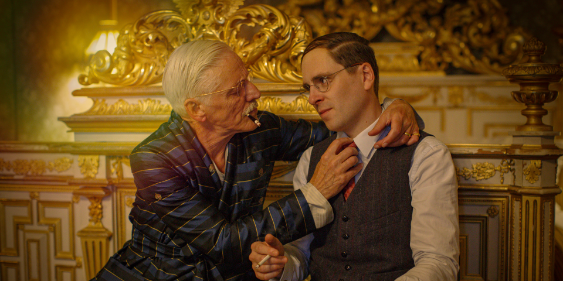
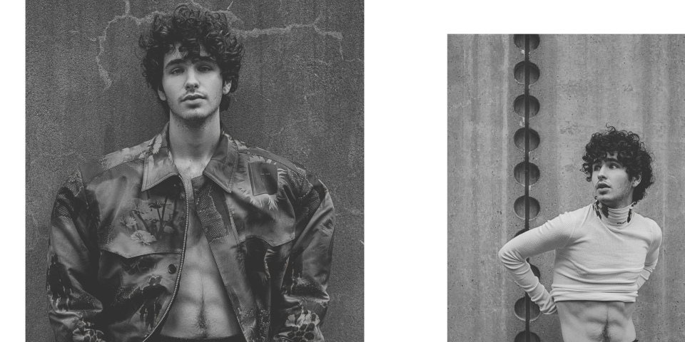
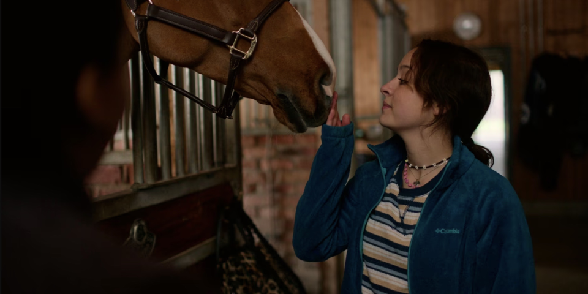
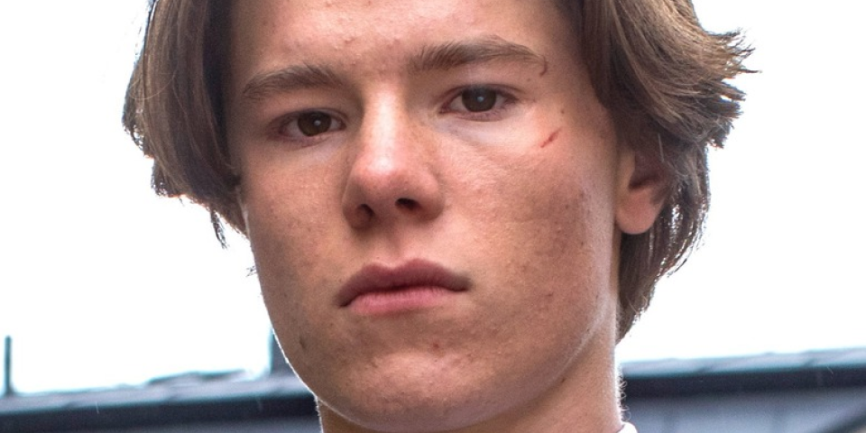

SEASON 3
dal 13 APRILE
"Nient'altro che buone “Vibe” mentre il cast di Young Royals è tornato sul set per la terza e ultima stagione!" lo streamer ha annunciato sui suoi social oggi (13 aprile).
- LA SERIE
- HOME
- GALLERY
Tutto questo inizia quando il principe Wilhelm viene spinto in un nuovo collegio chiamato Hillerska dopo che un video scandaloso di lui che combatte in una discoteca fa il giro.
CURIOSITÀ SULLA SERIE
1. Hillershka in realtà non esiste

La scuola "Hillershka", famosa nella serie per ospitare il reali svedesi, in realtà non esiste. E' vero però che nel 1800 è esistita una scuola sotto il nome di "Hillshka", e similarmente a Wilhelm, anche il Principe Filippo, tutt'ora regnante nello stato svedese, ha completato la sua formazione presso una di queste "boarding school", e prese parte a tutti gli eventi sociali organizzati dall'istituzione, persino iscrivendosi a una "frat house".
1. I "Noll" e le scuole svedesi
Per le scuole svedesi i Noll sono le prime matricole universitarie/liceal. La serie racconta fedelmente qual è il percorso che un Noll deve intraprendere come matricola per farsi rispettare dagli altri. E' infatti "normale" che i primini stiano sotto il comando e le decisioni dei ragazzi di anni superiori, occasionalmente costringendoli goliardicamente a commettere qualche "ragazzata" per loro conto. Anche per quanto riguarda Re Filippo, e la sua esperienza presso la sua boarding school, sono girate voci sul pesante "nolling" che le matricole ricevevano.
3. Wilhelm e Re Filippo
Come il principe Wilhelm nella serie tv, anche Re Filippo nella sua giovinezza aveva problemi nel fare discorsi a pubblico aperto a causa della sua dislessia, un problema in cui è sempre stato trasparente a riguardo. Dopo vari trattamenti e terapie logopedistiche ha sconfitto la sua paura e intraprende lunghi discorsi quando si tratta del parlare pubblicamente al suo popolo.
4. Amori impossibili
Un'altra cosa che hanno in comune la serie e la famiglia reale è riguardo agli amori impossibili.Si dice che Re Gustavo abbia avuto relazioni amorose con il suo chef e proprietario di un ristorante, Kut Haibi. Una serie svedese, "En kungling afair" nel 2021 ha indagato proprio su questo amore nascosto riuscendo a risalire a delle lettere che i due innamorati si scambiavano. Diversamente dalle prove per, la famiglia reale non ha mai detto nulla a riguardo.
5. Questione d'accenti
Un'indiscrezione del cast di Young Royals, ci ha raccontato nel fuori scena come tutti gli attori abbiano dovuto "mascherare" il proprio accento popolar, per imparare quello "posh", una tipologia di accento usato principalmente nella capitale e dai reali stessi. Un po' come l'accento della ormai Regina Elisabetta di Inghilterra. E' stato poi spiegato come i nomi della serie siano stati pensati appositamente per venire incontro ad un pubblico internazionale , preferendo dei nomi più facili da pronunciare data la particolare difficoltà della lingua svedese.
6. August a.k.a Malte Gardiner
L'attore che interpreta August, Malte, è in realtà un figlio d'arte. Suo papà Pontus gardinger è un famoso presentatore svedese, che ha incoraggiato il figlio ad intraprendere la carriera da modello, traslata poi in quella d'attore. Malte ha un ricco background cinematografico riuscendo anche a passare le selezioni per Netflix. Malte aveva però partecipato ai casting per il ruolo di "Simonr", ma è stato preso poi per il ruolo di August, cugino del principe Wilhelm.
7. Inclusività nella serie
Sara, sorella di Simon, è nota nella serie anche per dissociarsi dal mondo e dalle logiche esterne data la sua Sindrome di Asperger. Come nella serie, anche Frida Arganto, l'attrice di Sara, ha la Sindrome di Asperger, ed è proprio grazie a questo che nella serie, la giovane Sara si prende cura della scuderia reale della scuola, proprio come fa nella vita reale. Frida lavora infatti in un Ranch di allevamento per cavalli.
8. Mostrare la verità
Sempre da indiscrezione interne, si dice che il regista abbia organizzato i casting per la serie prediligendo "veri" teenagers. Rojda Sekersöz ha infatti spiegato che nel suo team di attori voleva "facce vere", con brufoli, imperfezioni, generalmente volendosi allontanare da quelli che sono i "beauty standards" nel mondo del cinema Hollywoodiano. La serie è stata anche premiata per aver rappresentato nel modo corretto la situazione demografica svedese, con le loro differenze tra classi reali, dirigenti e operaie, facendo conoscere quali fossero le disparità da sanare nel suo paese.